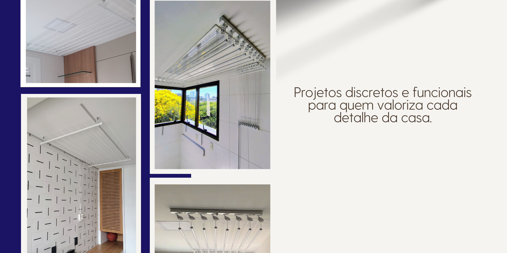
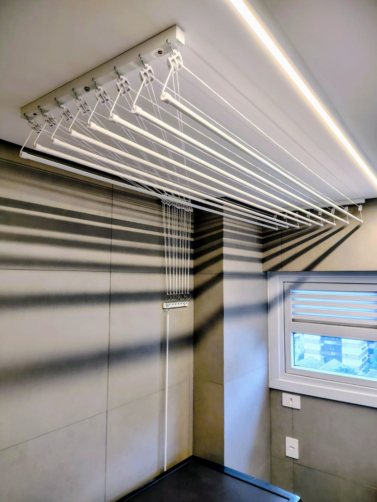
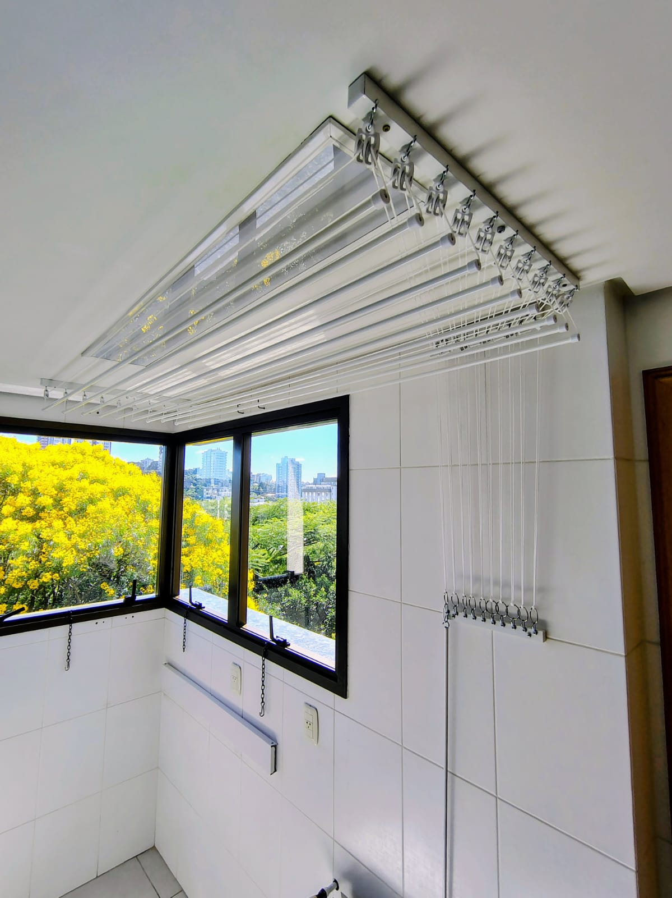
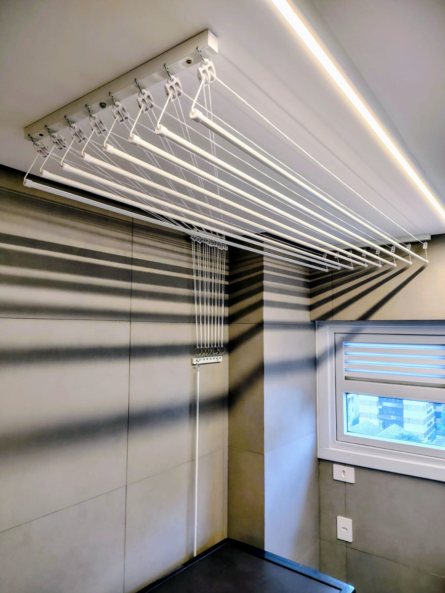
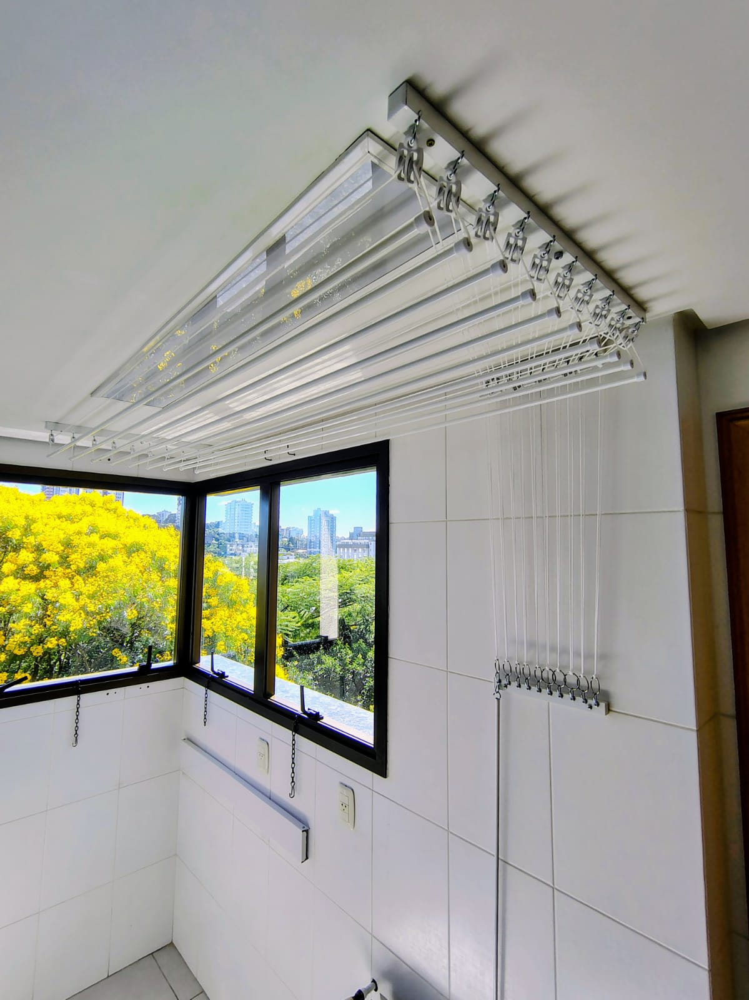

Varais Sob Medida com Instalação Profissional
 Orçamento no WhatsAppPor que escolher a Balazi Varais?
📏 Sob Medida
Varais personalizados para cada ambiente.
⚡ Instalação Rápida
Equipe especializada e equipamentos profissionais.
🏡 Acabamento Premium
Qualidade que valoriza e harmoniza com o seu ambiente.
Nossos Principais Produtos

Varal Tradicional de Teto
O Varal Tradicional de Teto é ideal para quem deseja otimizar o espaço e manter a lavanderia organizada. Produzido sob medida, oferece funcionalidade e um excelente aproveitamento da área útil.
Seu sistema com manivela permite baixar e elevar o varal com facilidade, tornando o processo mais prático e eficiente.
Fabricado em alumínio com pintura eletrostática a pó, garante longa durabilidade, resistência e acabamento premium. Equipado com cordas de polipropileno 3,5mm (tratamento UV) e roldanas reforçadas, entregando desempenho superior na elevação.
Pode ser instalado em laje, forro de madeira ou forro de gesso, com segurança e garantia.
Solicitar OrçamentoVaral Individual de Teto
O Varal Individual de Teto foi criado para quem busca praticidade, organização e melhor aproveitamento de espaço. Produzido sob medida, adapta-se perfeitamente ao local de instalação.
Seu grande diferencial é o comando individual, permitindo baixar e elevar uma vareta por vez, tornando o uso mais leve e confortável.
Estruturado em alumínio com pintura eletrostática a pó, ele oferece durabilidade e acabamento premium. Conta com cordas de polipropileno 2,5mm (tratamento UV) e roldanas de alta densidade, garantindo elevação suave e silenciosa.
Pode ser instalado em laje, forro de madeira ou forro de gesso, com segurança e garantia.
Solicitar OrçamentoProjetos Realizados

 



O que nossos clientes dizem
Feedbacks reais que recebemos no WhatsApp 📱
Como solicitar seu orçamento
Siga estes passos para receber seu orçamento de forma rápida:
📏 1. Envie as medidas
Mande largura × comprimento do local onde deseja instalar.
📸 2. Envie fotos do ambiente
2 ou 3 fotos ajudam a indicar o modelo ideal.
🧱 3. Informe o tipo de forro
Gesso, madeira, laje ou PVC.
📍 4. Diga sua cidade
Assim calculamos deslocamento e disponibilidade.